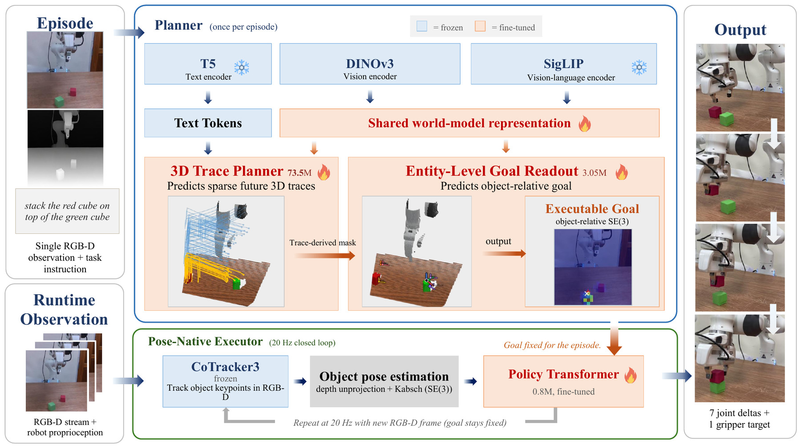
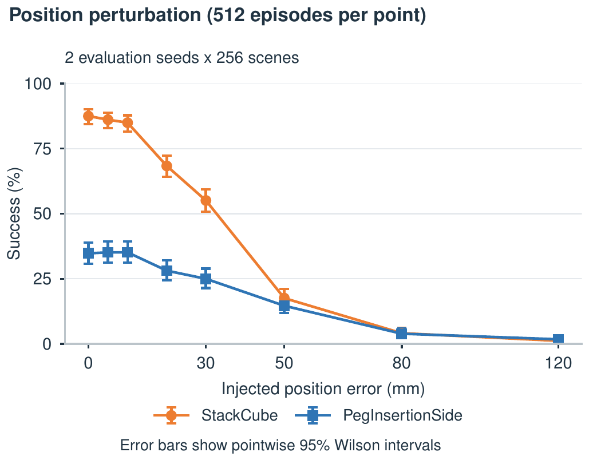

Preprint
Overview
Generative world models provide rich predictions of how manipulation scenes may evolve toward task objectives, yet those futures do not directly expose the compact task variables required by control. When training supervises future prediction alone, terminal goal accuracy is not an explicit learning objective, even when geometric recovery is available. We present Entity-Level Goal Readout, a learned prediction-to-execution interface that makes the executable terminal goal an explicit output of a 3D trace world model. It combines object-centric pose prediction with translation grounded in observed depth to produce a compact goal in SE(3). A shared Pose-Native Executor consumes this fixed goal with online object-pose feedback for closed-loop control without rerunning the world model. Across five manipulation tasks, the pipeline achieves a mean success rate of 79.69%. Goal diagnostics directly measure terminal goal accuracy, while controlled translation perturbations characterize how execution degrades under goal error. Zero-shot deployment on a Franka arm achieves 73.33% success on nominal StackCube, 66.67% with distractors, and 75.00% on PickPlate with a target unseen during policy training. These results support treating the prediction-to-execution interface as an explicit learned component of world-model planning rather than incidental post-processing in the control pipeline itself.
Pipeline

Highlighted above: where in the architecture the selected step happens. Frozen encoders are blue in the figure, fine-tuned parts orange.
Explore
Three successful episodes per task, over the observed scene. Only query points that actually move are drawn. Drag to orbit, scroll to zoom, scrub through time. In the diverging episodes the traces miss badly, the goal does not, and the rollout still succeeds.
predicted Where the 3D Trace Planner said each query point would go. It sees the frame‑0 RGB-D and the instruction, runs once, and never observes the rollout.
executed Where those same points actually went while the Pose-Native Executor drove the object. Same query points, same starting frame, 20 Hz closed loop.
The two are the same query points, so any gap between them is prediction error — and it is large. On this StackCube frame the predicted trace stops about 120 mm short of where the cube actually ends up, yet the goal handed to the executor is off by 1.6 mm. Both numbers are in the panel, and the ratio is the argument: the endpoint of a predicted trace is not a goal. The goal is a separate learned readout, which is why it stays accurate while the trace does not. The diverging frames are the extreme case — the traces miss badly, the goal does not, and the rollout still succeeds.
World frame: ManiSkill table frame, Z‑up, metres, table surface at z = 0. Scene is the frame‑0 depth image unprojected, cropped to the workspace the episode uses and voxel‑downsampled to 6500 points. the traces drawn are the ones on the manipulated object; the arm is shown as geometry that moves rather than as a second bundle of lines.
Goal accuracy
The three tasks the paper reports a terminal goal position error for. Traces turned down, poses turned up: the shell is the planner's error for that episode, and the dashed frame is where the object actually had to end up.
Each ring is that method's mean terminal goal position error for this task, drawn about the true goal. They are per-task means over the evaluation set, not per-episode predictions — the export carries a predicted goal for our method only, which is the one number shown on the canvas.
| Planner → goal | Represents | PickCube | PegInsertionSide | StackCube |
|---|---|---|---|---|
| Cosmos 3 Edge | RGB video | 141.3 ±89.3 | 348.2 ±214.9 | 87.6 ±61.6 |
| TesserAct, adapted | RGB-DN video | 456.9 ±158.3 | 76.9 ±38.2 | 224.8 ±89.0 |
| Track2Act, adapted | 2D tracks | 167.5 ±57.0 | 256.2 ±33.0 | 143.0 ±89.0 |
| Structured-4D, released | 4D geometry | 192.2 ±82.9 | 373.5 ±115.3 | 31.0 ±19.3 |
| Structured-4D, adapted | 4D geometry | 166.4 ±61.3 | 361.4 ±83.3 | 36.3 ±20.3 |
| TraceGen + Rigid Readout (K=1) | 3D tracks | 41.1 ±21.7 | 42.6 ±31.6 | 28.9 ±38.7 |
| TraceGen + Rigid Readout (K=4) | 3D tracks | 37.2 ±19.3 | 40.8 ±33.0 | 25.4 ±38.8 |
| Entity-Level Goal Readout | 3D tracks + goal | 31.5 ±20.1 | 29.4 ±16.4 | 12.8 ±34.0 |
Terminal goal position error in mm, mean ± 1 SD over valid readouts. Lower is better. Whiskers span mean ± 1 SD and are clipped at zero, since the error is a distance: on StackCube every 3D-track method has an SD larger than its mean, which is a heavy tail of occasional large misses rather than a symmetric spread. Against Rigid Readout (K=4): −15.3% on PickCube, −27.9% on PegInsertionSide, −49.6% on StackCube.
Simulation
Every row drives the same Pose-Native Executor weights. Only the goal changes.
| Goal source | PickCube | LiftPegUpright | PegInsertionSide | StackCube | PushCube | Mean |
|---|---|---|---|---|---|---|
| Rigid Readout (K=1) | 29.80 | 70.18 | 20.05 | 52.47 | 99.74 | 54.45 |
| Rigid Readout (K=4) | 46.48 | 76.95 | 21.88 | 54.82 | 99.22 | 59.87 |
| Entity-Level Goal Readout | 81.50 | 98.35 | 32.84 | 86.54 | 99.20 | 79.69 |
| Oracle goal | 94.66 | 97.27 | 36.72 | 87.11 | 99.74 | — |
Success rate in percent, five ManiSkill3 tasks, one shared executor. Mean gain over Rigid Readout (K=4): +19.82 points. Oracle uses the true task goal and bounds what this executor can reach; it has no mean in the paper.
Planning cost
The planner runs once, so its cost is paid once per episode rather than per control step. The executor that follows costs 1.4 ms a step at 20 Hz.
| Planner | Params | Peak memory | Time | Output |
|---|---|---|---|---|
| Cosmos 3 Edge | 9.13B | 19.33 GB | 35.63 s | 81 RGB frames |
| TesserAct | 5.7B | 16.22 GB | 292.0 ± 4.9 s | 49 RGB-DN frames |
| Track2Act | 469M | 1.91 GB | 3.80 s | 400 2D tracks |
| Structured-4D | 1.1B | 5.71 GB | 4.45 s | 4D point cloud |
| Ours | 677.6M | 5.60 GB | 1.27 s | 3D traces + goal |
Single RTX 5090, after warm-up. Both axes are logarithmic: planning time spans 230× from end to end and parameter count 19×. Mark area is peak memory. TesserAct is 292.0 ± 4.9 s; the others were measured once. Switch to the table for the exact figures.
Sensitivity
Displace the true goal and re-run. A few millimetres are absorbed; past the task's clearance they are not.

Rollouts
The successful evaluation episodes from the export, chosen before they were watched: two clean, one with the true goal displaced by 20 mm, one where the predicted trace diverges. Success rates come from the tables above, never from this selection — and the failures are in the real-robot section below, with an analysis beside them.
No episodes match these filters.
Real robot
Trained only in simulation. No fine-tuning, no real-robot demonstrations. Each trial is shown twice: the side camera, and the 384 × 384 RGB the policy actually saw. Outcomes are read from the deployment log, not judged from the footage.
Two successes per setting
One failure per setting
Failure analysis
All three failures above were logged with sim_success = true and a clean exit code: the goal the readout produced did drive a successful rollout in simulation, and the miss appeared only on hardware. The gap is therefore in transfer — online pose estimation and contact — rather than in the goal itself. That matches the sensitivity result above: at the 12.8 mm goal error this readout achieves on StackCube, the executor still has margin, so a real-robot miss is not explained by goal error alone.
Outcomes are read from the deployment log, never judged from the footage. Success rates come from the table below, which covers all 54 trials; these six are individual examples.
| Setting | Successes | Trials | Rate |
|---|---|---|---|
| StackCube · nominal | 22 | 30 | 73.33 |
| StackCube + distractors · intervention | 8 | 12 | 66.67 |
| PickPlate · unseen target | 9 | 12 | 75.00 |
Rates in percent, from the paper. The six trials above are individual examples and are not a sample these rates can be computed from.
Interactive demo
Pick a task and a frame. The readout gives back the predicted 3D traces and one executable goal — a pose, as seven numbers, object-relative. That is the entire interface the executor sees.
Object-relative: the goal in the object's own frame at t = 0. Translation in metres, rotation as a unit quaternion (x, y, z, w).
.npy)K as fx, fy, cx, cy — OpenCV conventionT_WC, optional — without it the goal is returned in the camera frameThis preview runs from exported episodes. The live version is a Gradio app on Hugging Face Spaces, where the planner and the readout run on a GPU and return the goal for a frame you upload.
T̂g and the object-relative ΔT̂g.npz, in the same schema this viewer readsThe executor is not run online — it needs a simulator or a robot in the loop. The Space returns the goal; the rollouts above are pre-recorded.
The frames above are exported evaluation episodes, so the goal shown is the one the executor actually received. Three per task, for the two tasks whose goal the paper reports a position error for.
Cite
@article{predictedfutures,
title = {Predicted Futures Are Not Enough:
Learning Executable Goals for
Robot Manipulation},
author = {Chuang, Tzu-Yu and Chang, Ching-Hsiang and
Lee, Yi-Hsiu and Sun, Min and Yang, YuanFu},
year = {2026}
}